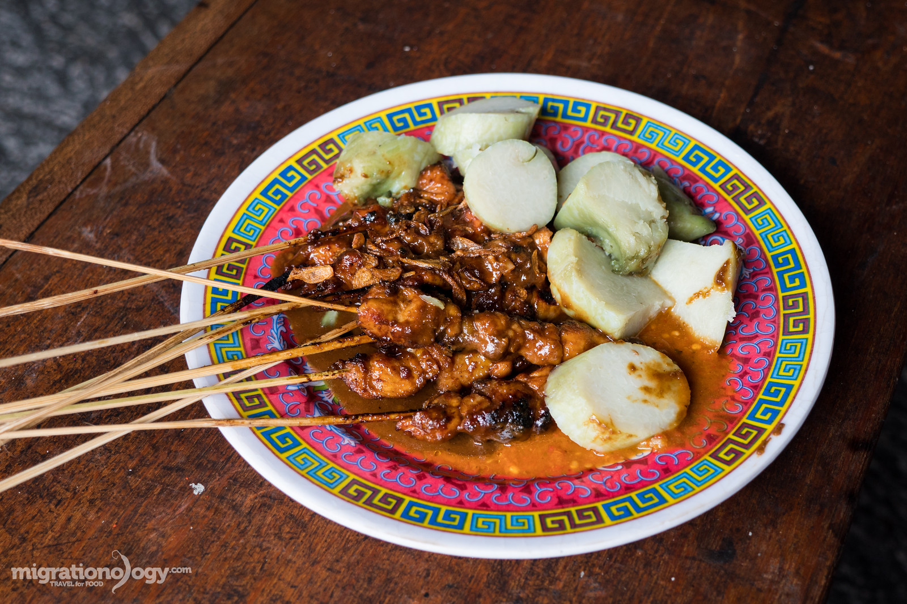
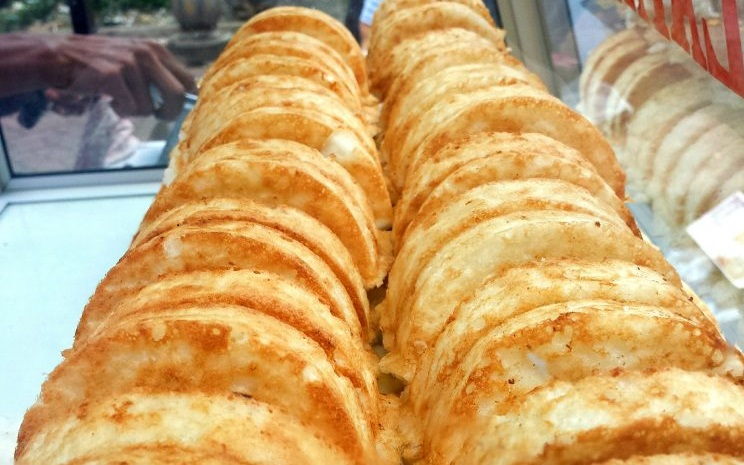
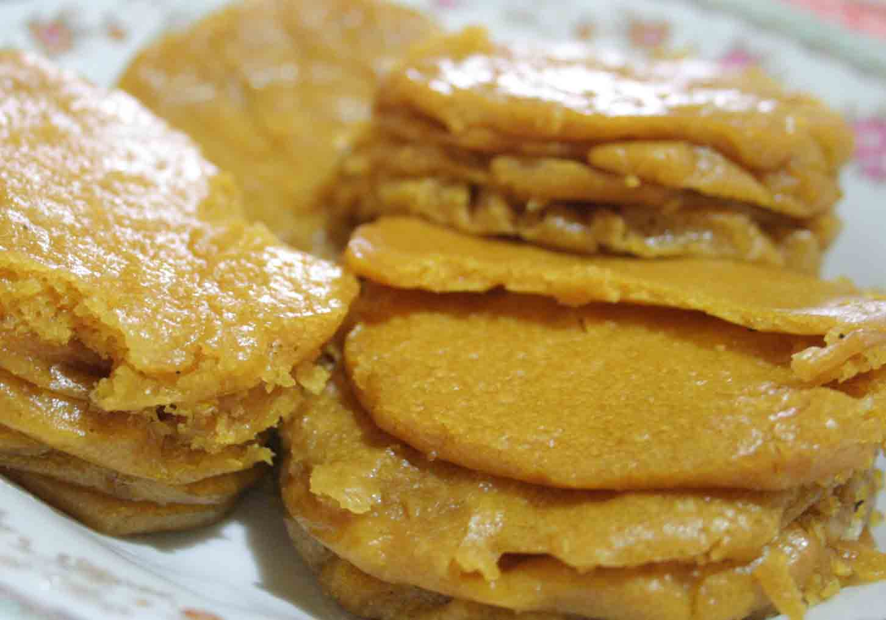
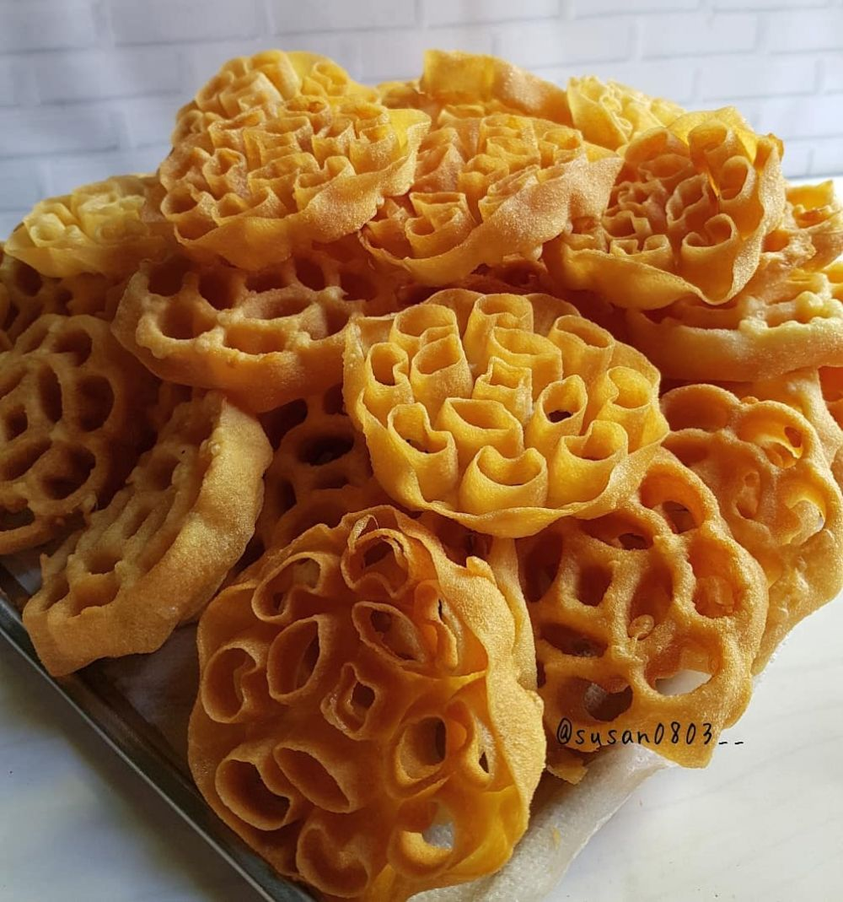

3 Kedai the Susu Telur Terkenal Di Medan
Penulis: Silvita Agmasari | Editor: Silvita Agmasari
(TST) merupakan minuman populer di kalangan masyarakat Medan, Sumatera Utara.
TST umumnya dikonsumsi pada malam hari, sebagai minuman untuk ngobrol dan nongkrong bersama teman-teman.
Ada beberapa tempat minum Teh Susu Telur populer di Medan. Kedai TST umumnya berjualan dari malam sekitar pukul 22.00 WIB sampai dini hari sekitar pukul 03.00 WIB.
Berikut adalah tiga tempat minum TST seperti yang dirangkum oleh Tribun Medan
Berikut ini :
Tst Deretan Simpang Jalan Ir H Juanda
Kedai TST ini berlokasi di sekitar simpang Jalan Juanda atau tepat di depan ruko-ruko yang menjajakan TST sebagai menu andalannnya.
Satu gelas TST dihargai dengan Rp 10.000an, jika menambahkan dua telur harganya menjadi Rp 15.000an. Sementara itu untuk TST Cokelat harganya Rp 12 ribu.
Kedai ini biasanya buka pada pukul 19.00 WIB sampai pukul 04.00 WIB.
Kedai TST di Jalan Jalat
Kedai TST di Jaan Halat Kota Medan ini juga sudah berjualan selama puluhan tahun.
Berbagai kedai yang berlokasi di sekitar Jalan Halat tersebut banyak menjual minuman TST.
Berbagai kedai yang berlokasi di sekitar Jalan Halat tersebut banyak menjual minuman TST.
Kedai-kedai di sekitar Jalan Halat buka dari pukul 10.00 WIB hingga05.00 WIB.
TST Pak Haji
TST Pak Haji berlokasi di Jalan Puri, Kelurahan Kota Matsum, Kecamatan Medan Area, Kota Medan.
Satu porsi TST di sana terdiri dari susu, air, dan telur yang diracik menjadi minuman yang menghangatkan.
Harga satu porsi TST bisa kamu dapatkan hanya dengan Rp 12.000an.
Kedai-kedai di sekitar Jalan Halat buka dari pukul 10.00 WIB hingga05.00 WIB.
Kedai TST Pak Haji buka dari pukul 14.00 hingga 03.00 WIB.
Selain TST, di sana juga menjual berbagai jajanan, nasi soto, indomie kuah, martabak, hingga nasi goreng.
Date/Time:

Ini Adalah Contoh Makanan Khas Betawi Yaitu Kerak Telor

Ini Adalah Contoh Makanan Khas Madura Yaitu Sate
Ini Adalah Contoh Makanan Khas Makassar Yaitu Kue Pancong

Ini Adalah Contoh Makanan Khas Barabai Yaitu Apam Barabai

Contoh Makanan Khas Jawa Tengah Yaitu Kembang Goyang

Contoh Makanan Khas Jawa Tengah dan sekitarnya yaitu nasi tumpeng